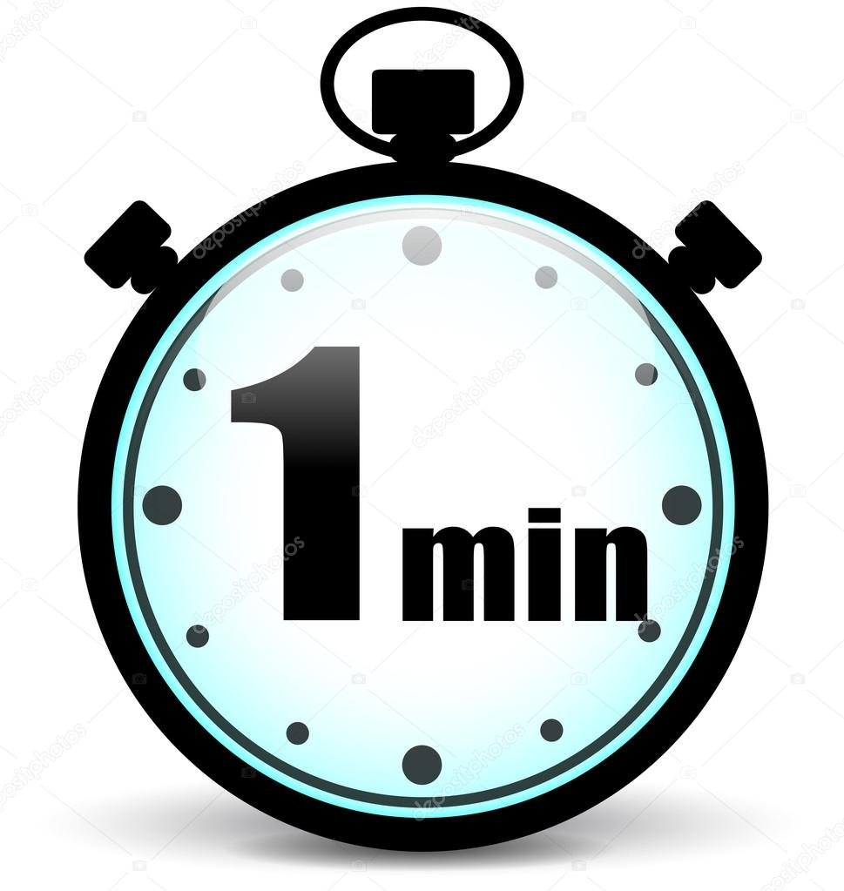

Minuto (en latín minutus, 'pequeño'), unidad de tiempo igual a la sexagésima parte de una hora, y equivalente a 60 segundos.
En geometría, el minuto es una medida de ángulo, también denominada minuto de arco, igual a la sexagésima parte de un grado cuando el círculo se divide en 360 grados. Un minuto es igual a 60 segundos de arco. Los símbolos que representan las diferentes unidades son 1° (1 grado), 1' (1 minuto) y 1' (1 segundo).
